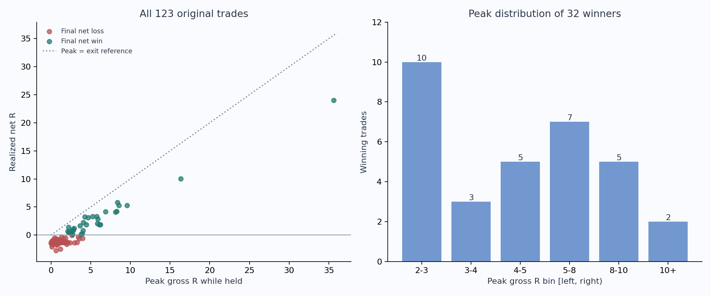
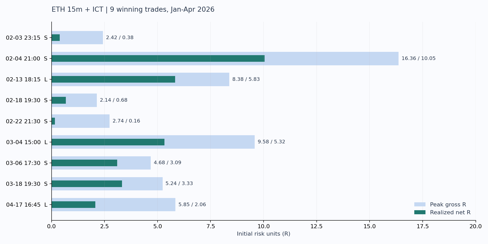
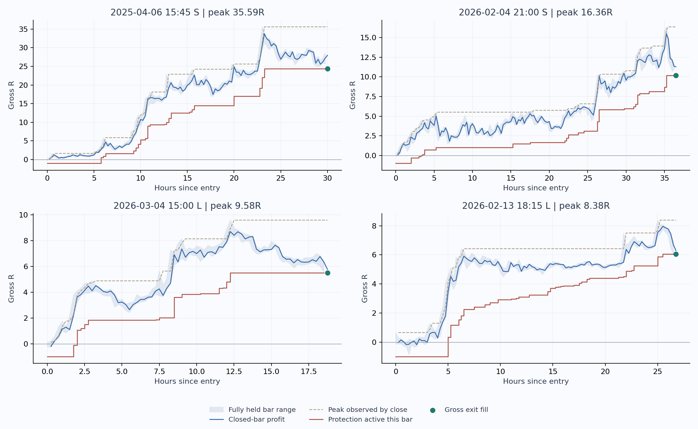

盈利单多数能走到约4—6R，少数走到10R以上。 连续历史123笔中32笔最终净盈利；赢家峰值中位4.36R、均值6.09R、最大35.59R。2026前4月9笔赢家的峰值中位5.24R、最大16.36R。只看最大值会被两笔超大行情带偏。
回吐确实存在，但不能把回吐总额当可追回利润。 32笔赢家平均从峰值回吐2.79R后退出，最终兑现约54.2%的毛峰值；扣费后兑现约52.6%的净峰值。与此同时，14笔峰值≥5R的大赢家中，7笔在原跟踪激活后、抵达峰值前已有超过2R的回落。
下一步应区分盈利初期保本与趋势后段锁盈。 不宜直接统一3R全平或把所有尾仓压成1—2R回撤；更值得单独验证“较晚启动的峰值比例保护”。本轮只做路径诊断，没有测试这个新规则，也没有证明它优于原版。
这里的峰值是从真实开仓到真实退出之间的最大有利价格变化，除以初始价格止损距离。浮盈峰值为毛R，最终净R扣名义往返0.2%成本。所有32笔赢家都已核对退出根：该根的有利极值没有超过此前峰值，因此赢家峰值不受退出根先后顺序影响。
| 窗口 | 盈利/全部 | 最小峰值 | P25 | 中位峰值 | P75 | P90 | 最大峰值 | 平均峰值 | 盈利单净R中位 |
|---|---|---|---|---|---|---|---|---|---|
| 2023年8月—2024年末 | 14/66 | 2.19 | 3.83 | 5.10 | 6.68 | 8.22 | 8.55 | 5.18 | 1.89 |
| 2025全年 | 9/40 | 2.63 | 2.82 | 3.66 | 4.27 | 12.08 | 35.59 | 7.21 | 1.66 |
| 2026年1—4月 | 9/17 | 2.14 | 2.74 | 5.24 | 8.38 | 10.94 | 16.36 | 6.38 | 3.09 |
| 连续2023年8月—2026年4月 | 32/123 | 2.14 | 2.82 | 4.36 | 6.38 | 8.54 | 35.59 | 6.09 | 1.89 |
连续窗口与前三行重叠，不能加总样本。2025的平均峰值7.21R高于中位3.66R，主要受那笔35.59R推动；它独自贡献2025全部正收益的65.0%。研究止盈应主要看分布和逐笔路径，不能把平均或最大峰值直接设成统一目标。

| 赢家峰值区间 | 笔数 | 占32笔赢家 |
|---|---|---|
| 不足2R | 0 | 0.0% |
| 2—3R | 10 | 31.2% |
| 3—4R | 3 | 9.4% |
| 4—5R | 5 | 15.6% |
| 5—8R | 7 | 21.9% |
| 8—10R | 5 | 15.6% |
| 10R以上 | 2 | 6.2% |
32笔赢家里10笔止步于2—3R，14笔达到5R，7笔达到8R，只有2笔达到10R。这说明小幅盈利兑现和趋势尾仓确实有不同需求，但这些分组按最终结果划分，开仓时不能预先知道自己属于哪一组。
先看最近讨论窗口。浅色条为峰值毛R，深色条为最终净R；两者差额包含价格回吐和成本，表格另列纯价格回吐，避免把手续费重复算成止盈问题。

| 入场北京时间 | 方向 | 盘中峰值毛R | 最高收盘毛R | 兑现毛R | 兑现净R | 价格回吐R | 到峰值约小时 | 总持仓约小时 |
|---|---|---|---|---|---|---|---|---|
| 2026-02-03 23:15 | 空 | 2.42 | 2.22 | 0.46 | 0.38 | 1.97 | 3.50 | 5.00 |
| 2026-02-04 21:00 | 空 | 16.36 | 15.48 | 10.19 | 10.05 | 6.17 | 35.25 | 36.50 |
| 2026-02-13 18:15 | 多 | 8.38 | 7.96 | 6.05 | 5.83 | 2.33 | 25.00 | 26.75 |
| 2026-02-18 19:30 | 空 | 2.14 | 1.92 | 0.79 | 0.68 | 1.35 | 28.50 | 40.25 |
| 2026-02-22 21:30 | 空 | 2.74 | 2.28 | 0.50 | 0.16 | 2.24 | 4.00 | 9.00 |
| 2026-03-04 15:00 | 多 | 9.58 | 8.70 | 5.49 | 5.32 | 4.09 | 12.25 | 18.75 |
| 2026-03-06 17:30 | 空 | 4.68 | 4.36 | 3.24 | 3.09 | 1.44 | 43.25 | 47.75 |
| 2026-03-18 19:30 | 空 | 5.24 | 5.01 | 3.45 | 3.33 | 1.79 | 28.25 | 44.50 |
| 2026-04-17 16:45 | 多 | 5.85 | 5.50 | 2.30 | 2.06 | 3.55 | 7.75 | 23.50 |
最明显的两个问题：2月4日那笔峰值16.36R，最终毛10.19R/净10.05R，回吐6.17R；4月17日峰值5.85R，最终净2.06R，回吐3.55R。另一方面，2月18日那笔盘中虽到2.14R，最高收盘只有1.92R，原版“收盘2R才启动”始终没触发，最后由反向信号净赚0.68R退出。触及2R与收盘站上2R是两种不同的保护触发。
时间按15min K线标签估计：峰值可能发生在该根任何时刻，盘中退出也没有精确秒，所以“约小时”不是精确成交时长。9笔赢家持仓中位26.75小时，到峰值中位25小时；不能因为使用15min信号，就假定盈利单都应在几根K线内结束。
只看赢家会高估目标可达性。以下以每个窗口的全部原版交易为分母，先按持仓期间达到阈值筛选，再观察最终结局。它描述原退出下的路径，既不是新固定止盈的成交胜率，也不能预测下一笔。
| 曾达到毛R | 到达/全部 | 最终赢/亏 | 最终净盈利比例 | 最终净R中位 | 下一档 | 继续到下一档 |
|---|---|---|---|---|---|---|
| 1 | 59/123 | 32/27 | 54.2% | 0.27 | 2 | 41/59 |
| 2 | 41/123 | 32/9 | 78.0% | 1.21 | 3 | 26/41 |
| 3 | 26/123 | 22/4 | 84.6% | 2.56 | 4 | 19/26 |
| 4 | 19/123 | 19/0 | 100.0% | 3.32 | 5 | 14/19 |
| 5 | 14/123 | 14/0 | 100.0% | 4.13 | 6 | 10/14 |
| 6 | 10/123 | 10/0 | 100.0% | 4.75 | 8 | 7/10 |
| 8 | 7/123 | 7/0 | 100.0% | 5.32 | 10 | 2/7 |
| 10 | 2/123 | 2/0 | 100.0% | 17.02 | 15 | 2/2 |
| 曾达到毛R | 到达/全部 | 最终赢/亏 | 最终净盈利比例 | 最终净R中位 | 下一档 | 继续到下一档 |
|---|---|---|---|---|---|---|
| 1 | 12/17 | 9/3 | 75.0% | 1.37 | 2 | 11/12 |
| 2 | 11/17 | 9/2 | 81.8% | 2.06 | 3 | 7/11 |
| 3 | 7/17 | 6/1 | 85.7% | 3.33 | 4 | 6/7 |
| 4 | 6/17 | 6/0 | 100.0% | 4.33 | 5 | 5/6 |
| 5 | 5/17 | 5/0 | 100.0% | 5.32 | 6 | 3/5 |
| 6 | 3/17 | 3/0 | 100.0% | 5.83 | 8 | 3/3 |
| 8 | 3/17 | 3/0 | 100.0% | 5.83 | 10 | 1/3 |
| 10 | 1/17 | 1/0 | 100.0% | 10.05 | 15 | 1/1 |
完整历史达到1R的59笔有27笔最终净亏；达到2R的41笔仍有9笔净亏；达到3R的26笔有4笔净亏。达到4R的19笔最终均盈利，但其中只有14笔继续到5R。达到8R的7笔只有2笔继续到10R。不能把“19/19最终盈利”理解成未来必胜；样本和原退出共同决定了这个结果。
图中灰色带只画完整持仓K线；蓝线为收盘浮盈，虚线为此前已见峰值，红线为当根已生效保护位，绿点为最终毛R成交。保护位按前一根收盘计算，图中没有提前一根显示止损。

| 入场北京时间 | 最终峰值R | 最终净R | 途中已确认回落至少R | 峰值根4ATR相当R | 峰后价格回吐R |
|---|---|---|---|---|---|
| 2025-04-06 15:45 | 35.59 | 24.00 | 7.23 | 9.41 | 11.26 |
| 2026-02-04 21:00 | 16.36 | 10.05 | 4.00 | 5.46 | 6.17 |
| 2026-03-04 15:00 | 9.58 | 5.32 | 2.45 | 3.31 | 4.09 |
峰值≥5R的14笔中，7笔在原收盘2R激活后、到最终峰值前已有超过2R的回落，中位至少2.03R，最大至少7.23R。因此从早期就用“见过的峰值减1R或2R”紧跟，会触碰到多笔本来可长成大赢家的途中回撤；具体新规则收益仍须重新模拟。
途中回落定义严格限定在激活之后、最终峰值所在K线之前：此前已经发生的有利峰值减后来完整K线的不利极值，是顺序可确定的下界。另存同根高低顺序可能上界；峰值所在根的回落没有加入，以免把峰后回落误算成到峰值前必须承受的回落。
R固定在入场风险，ATR会随行情变化。原跟踪是“收盘价±4×当前ATR”，所以4ATR不等于固定4R；波动扩大时，以初始R衡量的距离可以很大。旧止损位仍单向收紧，不能把距离扩大误说成止损价倒退。
| 入场北京时间 | 峰值毛R | 峰值根收盘R | 当根4ATR/R | 收盘后保护毛R（下一根生效） | 最终净R |
|---|---|---|---|---|---|
| 2026-02-03 23:15 | 2.42 | 2.22 | 1.77 | 0.46 | 0.38 |
| 2026-02-04 21:00 | 16.36 | 14.84 | 5.46 | 10.19 | 10.05 |
| 2026-02-13 18:15 | 8.38 | 7.70 | 1.88 | 5.86 | 5.83 |
| 2026-02-18 19:30 | 2.14 | 1.81 | 1.61 | -1.00 | 0.68 |
| 2026-02-22 21:30 | 2.74 | 2.28 | 2.15 | 0.13 | 0.16 |
| 2026-03-04 15:00 | 9.58 | 8.41 | 3.31 | 5.49 | 5.32 |
| 2026-03-06 17:30 | 4.68 | 4.36 | 1.12 | 3.24 | 3.09 |
| 2026-03-18 19:30 | 5.24 | 4.65 | 1.81 | 3.41 | 3.33 |
| 2026-04-17 16:45 | 5.85 | 5.50 | 3.21 | 2.30 | 2.06 |
35.59R大赢家峰值附近4ATR相当于9.41R，16.36R赢家相当于5.46R；这解释了为何会允许较大回吐。4月17日峰值5.85R，峰值根收盘5.50R、4ATR约3.21R，保护只到2.30R左右。这里有测试另一种锁盈方式的理由，但ATR较宽也帮助前两笔熬过了途中回撤，不能只看最终一段。
| 已触达毛R | 交易数 | 原最终平均毛R | 原最终平均净R |
|---|---|---|---|
| 2 | 41 | 2.46 | 2.22 |
| 3 | 26 | 3.69 | 3.42 |
| 4 | 19 | 4.92 | 4.71 |
| 5 | 14 | 5.82 | 5.59 |
| 6 | 10 | 6.91 | 6.67 |
| 8 | 7 | 8.63 | 8.40 |
| 10 | 2 | 17.26 | 17.02 |
例如到5R的14笔最终平均净5.59R、毛收益更高。因此本轮不优先把“5R兑现25%”当提高总收益的方案；若目标改为降低回撤，可以另行比较，但需同时接受可能少赚。上一轮2R兑现25%/50%已经降低近期和连续净收益。
下一轮必须重新走完整串行入场与同入场配对，同时报告：每笔救回多少亏损、哪几笔大赢家被提前截断、完整净收益、回撤和倍投账户。开发/后续年份分开，不能用本轮已观察到的峰值事后挑最优参数；本轮没有运行以上新机制，也没有把峰值金额当成假设可获得的收益。
| 窗口 | 前轮冻结规则 | 自然笔数 | 总净R | 匹配随机均净R | 匹配超额均净R | Holm校正p |
|---|---|---|---|---|---|---|
| 2026年1—4月 | original | 17 | 22.74 | 0.11 | 1.23 | 0.99 |
| 2026年1—4月 | cost_be2 | 17 | 24.68 | 0.15 | 1.30 | 0.99 |
| 2026年1—4月 | partial25_at2 | 17 | 20.37 | 0.02 | 1.18 | 0.99 |
| 2026年1—4月 | partial50_at2 | 17 | 18.00 | -0.06 | 1.12 | 0.99 |
| 2026年1—4月 | fixed3r | 17 | 13.00 | -0.02 | 0.78 | 0.99 |
| 2026年1—4月 | trail2_atr | 17 | 16.61 | 0.25 | 0.73 | 0.99 |
| 连续2023年8月—2026年4月 | original | 123 | -9.84 | -0.14 | 0.06 | 1.00 |
| 连续2023年8月—2026年4月 | cost_be2 | 123 | -10.92 | -0.14 | 0.04 | 1.00 |
| 连续2023年8月—2026年4月 | partial25_at2 | 123 | -14.59 | -0.18 | 0.06 | 1.00 |
| 连续2023年8月—2026年4月 | partial50_at2 | 123 | -19.33 | -0.22 | 0.05 | 1.00 |
| 连续2023年8月—2026年4月 | fixed3r | 123 | -27.70 | -0.26 | 0.00 | 1.00 |
| 连续2023年8月—2026年4月 | trail2_atr | 123 | -26.76 | -0.23 | -0.00 | 1.00 |
这张表直接引用上一轮冻结回测，不是本轮新实验。随机对照按同币、周期、方向、入场月、纽约小时/周末和先前120根波动桶匹配，每笔目标5个；随机均值/超额只用完整匹配子集。上述p针对相较随机入场的超额，不是不同退出方案的显著性检验。结果说明“看起来有很多回吐”并不意味着先前尝试的止盈规则已经改进净收益。
这次是原版成交路径的描述性诊断。盈利单按最终净结果筛选，不能在开仓时识别；所有条件比例只适用于原退出允许的持仓长度，改退出后会改变成交集合。峰值位于已持有的K线，不计退出后的新行情。32赢家峰值无退出根歧义；123笔中仅一笔初始止损单的峰值可能为0—0.356R，不影响≥1R统计。
普通OHLC不能提供每根内的精确高低顺序，订单和保护生效时序须明确建模，不能假定在事后最高点成交。TradingView策略执行文档
数据截止2026-05-01 UTC之前，holdout消耗0。研究历史此前已看过，不是新盲测。仍是Python原V8＋纽约[02,11)实际下一开盘准入、周末保留；受保护ICT脚本冬季行为和TV原生逐笔对齐仍未完成。没有新方向性实验、预测模型或排名，AUC/top-decile/单特征排序不适用；用原MFE、开仓/退出价格、原4ATR保护位的逐笔重建及已有匹配随机结果提供同等严格的事实对照。费用仅为既定0.2%，未计资金费率和额外滑点，没有实盘、训练或promote。
生成代码、输入与输出SHA、123笔独立交易的核验记录见实验目录。其中122条非空路径共有6301根完整持仓bar，另1笔入场根即止损、没有完整持仓bar。报告图表来自同一profiles和持仓路径导出。运行检查75项通过（4项峰值专项＋71项层间边界），没有把上一轮更广检查的失败说成通过。
cd /Users/zhangzc/fable-trading
export PYTHONPATH=/Users/zhangzc/fable-trading/.venv/lib/python3.9/site-packages:/Users/zhangzc/fable-trading
/usr/bin/python3 -m pytest -q tests/test_spike_v8_winner_peaks.py tests/boundaries/test_layer_imports.py
# builder需先提交；仅在新结果目录不存在时运行，禁止覆盖本轮证据
/usr/bin/python3 -m yoyo.evaluation.spike_v8_winner_peaks
/usr/bin/python3 scripts/report_spike_v8_winner_peaks.py
/usr/bin/python3 scripts/md_to_html.py analysis/p1_spike_v8_ict_winner_peaks_20260915.md --out-dir analysis/html